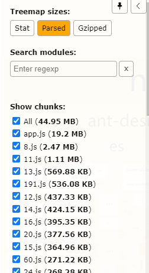

webpack系列-优化vue项目
前情提要：
后台管理系统由于两年来公司项目发展较快，增加了很多有的没的业务代码，由于初期太菜没有考虑到优化，导致 antd-vue 全局导入，使用的 admin 模板框架，没有及时删除无用的代码，雪球越滚越大，以致于现在首屏加载巨慢无比。
参考项目：https://github.com/edenleung/think-ant-vue 其中的 issure#14 具有相关介绍。
参考文章：
webpack 区分环境使用CDN以及HtmlWebpackPlugin插件的编写
compression-webpack-plugin - webpack
compression-webpack-plugin - Github
关于使用：brotli-webpack-plugin
Why you should use Compression Webpack Plugin?
Enable Brotli Compression in Webpack with Fallback to Gzip
问题解决：
TypeError: Cannot read property ‘tapPromise’ of undefined
遇到这个问题主要是 compression-webpack-plugin 版本太新，换了一个旧版本就ok了。
项目实现
项目环境：
- vue 2.x
- vue-cli 3.x
- webpack 4.x
public/index.html
<!DOCTYPE html>
<html lang="zh-cmn-Hans">
<head>
<meta charset="utf-8">
<meta http-equiv="X-UA-Compatible" content="IE=edge">
<meta name="viewport" content="width=device-width,initial-scale=1.0">
<link rel="icon" href="<%= BASE_URL %>logo.ico">
<title>后台管理系统</title>
<!-- require cdn assets css -->
<% for (var i in htmlWebpackPlugin.options.cdn && htmlWebpackPlugin.options.cdn.css) { %>
<link rel="stylesheet" href="<%= htmlWebpackPlugin.options.cdn.css[i] %>" />
<% } %>
</head>
<body>
<noscript>
<strong>We're sorry but vue-antd-pro doesn't work properly without JavaScript enabled. Please enable it to continue.</strong>
</noscript>
<div id="app">
<div id="preloadingAnimation"><div class=lds-roller><div></div><div></div><div></div><div></div><div></div><div></div><div></div><div></div></div><div class=load-tips>Loading</div></div>
</div>
<!-- require cdn assets js -->
<% for (var i in htmlWebpackPlugin.options.cdn && htmlWebpackPlugin.options.cdn.js) { %>
<script type="text/javascript" src="<%= htmlWebpackPlugin.options.cdn.js[i] %>"></script>
<% } %>
<!-- built files will be auto injected -->
<script src="//cdn.ronghub.com/RongIMLib-2.5.5.js"></script>
</body>
</html>
使用 htmlWebpackPlugin 传值，对 html template 进行编译。
vue.config.js
const path = require('path')
const webpack = require('webpack')
const CompressionWebpackPlugin = require('compression-webpack-plugin')
const zopfli = require('@gfx/zopfli')
const BrotliPlugin = require('brotli-webpack-plugin')
const BundleAnalyzerPlugin = require('webpack-bundle-analyzer').BundleAnalyzerPlugin
const NEED_ANALYSE = process.env.ANALYSE == 'on'
const IS_PROD = process.env.NODE_ENV === 'production'
function resolve (dir) {
return path.join(__dirname, dir)
}
const assetsCDN = {
externals: {
'vue': 'Vue',
'vuex': 'Vuex',
'vue-router': 'VueRouter',
'axios': 'axios',
'moment': 'moment',
'ant-design-vue': 'antd',
'viser-vue': 'ViserVue', // viserVue 会使用g2
},
css: [
'//cdn.jsdelivr.net/npm/ant-design-vue@1.7.5/dist/antd.min.css'
],
js: [
'//cdnjs.cloudflare.com/ajax/libs/vue/2.5.13/vue.min.js',
'//cdnjs.cloudflare.com/ajax/libs/vuex/3.1.0/vuex.min.js',
'//cdnjs.cloudflare.com/ajax/libs/vue-router/3.0.1/vue-router.min.js',
'//cdnjs.cloudflare.com/ajax/libs/moment.js/2.24.0/moment.min.js',
'//cdnjs.cloudflare.com/ajax/libs/moment.js/2.24.0/locale/zh-cn.js',
'//cdnjs.cloudflare.com/ajax/libs/axios/0.18.0/axios.min.js',
'//cdn.jsdelivr.net/npm/ant-design-vue@1.7.5/dist/antd.min.js',
'//cdn.jsdelivr.net/npm/viser-vue@2.4.3/umd/viser-vue.min.js'
]
}
// vue.config.js
module.exports = {
// 基本路径
publicPath: './',
// 输出文件目录
outputDir: 'dist',
assetsDir: 'static',
productionSourceMap: false,
configureWebpack: () => {
const config = {}
const plugins = [
// 存在问题 moment 进行cdn了 但是还是打包了 可能是其他库进行了引入 待确认
new webpack.IgnorePlugin(/^\.\/locale$/, /moment$/) // 忽略 moment/locale 下的所有文件
]
NEED_ANALYSE && plugins.push(
new BundleAnalyzerPlugin({
analyzerMode: 'server'
})
)
IS_PROD && plugins.push(
// Gzip
new CompressionWebpackPlugin({
algorithm(input, compressionOptions, callback) {
return zopfli.gzip(input, compressionOptions, callback)
},
compressionOptions: {
numiterations: 15
},
minRatio: 0.99,
test: /\.(js|css|json|txt|html|ico|svg)(\?.*)?$/i
}),
new BrotliPlugin({
test: /\.(js|css|json|txt|html|ico|svg)(\?.*)?$/i,
minRatio: 0.99
})
)
config.plugins = plugins
config.externals = IS_PROD ? assetsCDN.externals : {}
return config
},
// chainWebpack文档 https://github.com/Yatoo2018/webpack-chain/tree/zh-cmn-Hans
chainWebpack: config => {
config.resolve.alias
.set('@$', resolve('src'))
.set('@api', resolve('src/api'))
.set('@assets', resolve('src/assets'))
.set('@comp', resolve('src/components'))
.set('@views', resolve('src/views'))
.set('@layout', resolve('src/layout'))
.set('@static', resolve('src/static'))
// 替换svg 处理 loader
const svgRule = config.module.rule('svg')
svgRule.uses.clear()
svgRule
.oneOf('inline')
.resourceQuery(/inline/)
.use('vue-svg-icon-loader')
.loader('vue-svg-icon-loader')
.end()
.end()
.oneOf('external')
.use('file-loader')
.loader('file-loader')
.options({
name: 'assets/[name].[hash:8].[ext]'
})
if (IS_PROD) {
// 利用 html-webpack-plugin
config.plugin('html').tap(args => {
args[0].cdn = assetsCDN
return args
})
}
// config.plugins.delete('prefetch')
},
css: {
loaderOptions: {
less: {
modifyVars: {
/* less 变量覆盖，用于自定义 ant design 主题 */
/*
'primary-color': '#F5222D',
'link-color': '#F5222D',
'border-radius-base': '4px',
*/
},
javascriptEnabled: true
}
}
},
lintOnSave: true,
// babel-loader no-ignore node_modules/*
transpileDependencies: []
}package.json
{
...
"scripts": {
"serve": "vue-cli-service serve --open --mode development",
"build": "vue-cli-service build",
"dev-build": "vue-cli-service build --mode development",
"lint": "vue-cli-service lint",
"test:unit": "vue-cli-service test:unit",
"analyse": "cross-env ANALYSE=on NODE_ENV=production vue-cli-service build",
"rebuild": "sh scripts/rebuild.sh"
},
...
}效果
未优化前

优化后
项目总结
对于最基础的项目优化来说，应该是 UI组件库 的按需加载。
如果使用 CDN 进行导入，vue 版本是完整版本，包含了编译器和运行时的版本，会比 npm 导入的运行时版本 要大大约 30%。UI组件库也是完整版本，因此会加载很多没有使用到的组件，且不会tree-sharking。
因此，对于项目的最初搭建，按需加载时最好的优化手段。到项目后期再考虑是否使用 externals 抽离使用 CDN 。
compression-webpack-plugin 主要是通过内容编码优化压缩为服务器提供压缩版本，生成.gz文件。这需要 nginx 服务器也要做相应的配置。
brotli-webpack-plugin 算法比 gzip 压缩更好，生成.br文件供服务器使用，但是支持率没有 gzip 广，所以要有一个 gzip 的版本进行 shim。
对于 prefetch 来说，可以使用 prefetch 进行 CDN 请求处理，但是需要考虑兼容性。要做的话需要参考 vue-cli 如何实现 prefetch 的。
待做部分：
- visterVue CDN 抽离影响。